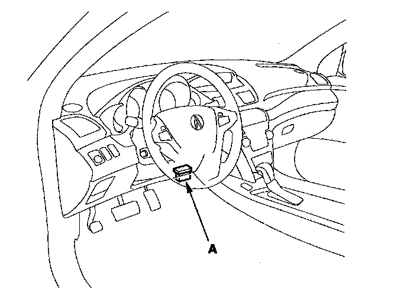

How to Retrieve DTCs and Freeze Data With the HDS (Honda Diagnostic System)
How to Retrieve DTCs and Freeze Data with the HDS (Honda Diagnostic System)1. If the active damper system indicator stays on, connect the HDS to the data link connector (DLC) (A) located under the driver's side of the dashboard.

2. Turn the ignition switch ON (II).
3. Make sure the HDS communicates with the vehicle and the active damper system control unit. If it doesn't, troubleshoot the DLC circuit.
4. Check for and note any stored DTCs. Also check the on-board snapshot data, and download any data found. Then refer to the indicated DTC's troubleshooting, and begin the appropriate troubleshooting procedure.
NOTE:
^ The HDS can read the DTC, freeze data, snapshot, current data, and other system data.
^ For specific operations, refer to the Help menu on the HDS.